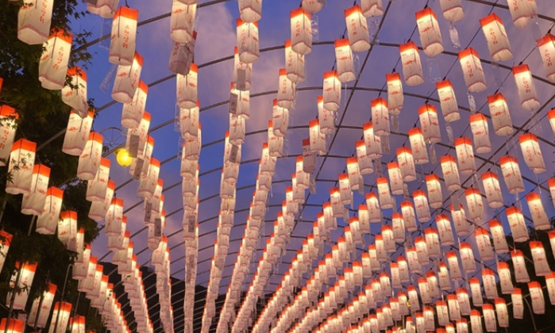

아이는 항상 일등을 주장하고, 친구들과 함께 게임하다가 이기지 못하고 지는 경우 울고불고 난리예요. 성장하면 나아지겠지 하다가 초등학교에서 이겨야 한다는 강박에 시달리고 있을 정도예요. 때로는 가정에서도 항상 자기가 잘해야한다고 소리지르고 이겨야 한다고 해요. 유아기 때는 자신감을 높여줘야 좋을 것이라고 여겼는데 걱정스러워요. 이러한 아이의 승부욕 성격을 어떻게 고쳐야 할까요.

1. 원인
1) 가정 환경
부모나 양육자가 승부욕을 강조하거나 아이의 성공을 너무 강조할 경우, 아이는 승부욕을 키우게 될 수 있습니다. 부모가 계속해서 아이를 이기도록 격려하고 칭찬하면, 아이는 승부욕을 길러갑니다. 가족 구성원 중에서 특별한 위치에 있는 경우, 예를 들어 외동아이, 막내, 형제 중에서 유일한 남자 아이 등은 부모나 양육자로부터 특별한 관심을 받을 가능성이 높아, 승부욕이 강해질 수 있습니다.
2) 자아 개념
아이의 자아 개념이 강하거나 자아실현이 중요하게 여겨질 때, 승부욕이 강해질 수 있습니다. 이러한 아이들은 자신을 다른 사람과 비교하고 자기만의 성과를 인정받는 것을 중요하게 생각합니다. 이로 인해 경쟁적인 성향이 더욱 부각됩니다.
3) 자기 효능감
자기 효능감은 자신의 능력에 대한 믿음을 나타냅니다. 승부욕이 강한 아이는 자기 효능감이 높아서 스스로 더 뛰어나고 강한 존재로 인식하며, 이를 계속 증명하고 싶어합니다. 따라서 어떤 상황에서든 자신을 뽐내고 이기려고 노력합니다.
4) 경쟁적인 환경
아이가 자주 경쟁적인 환경에 노출되면 승부욕이 강해질 수 있습니다. 학교, 스포츠, 게임 등 다양한 환경에서 경쟁을 경험하면, 아이는 이길 욕구를 키우게 됩니다.
5) 부정적인 감정
승부욕이 강한 아이는 실패나 패배를 견디기 어려울 수 있으며, 이로 인해 부정적인 감정을 느낄 수 있습니다. 이런 감정은 승부욕을 더 강화시킬 수 있습니다.
6) 칭찬과 보상
아이가 승리할 때에만 칭찬을 받고 보상을 받는 경우, 아이는 승부욕을 더욱 키울 수 있습니다. 이로 인해 승부욕이 강화되고 경쟁이 지나치게 중요하게 여겨질 수 있습니다.
2. 지도방법
1) 무조건적인 사랑과 지원
아이에게 무조건적인 사랑과 안정감을 제공해야 합니다. 아이는 이기거나 성공할 때 뿐만 아니라 실패할 때에도 사랑받는다는 것을 이해해야 합니다.
2) 임무와 책임 부여
아이에게 일상적인 임무나 책임을 부여하여 승부욕을 관리하는 데 도움을 줄 수 있습니다. 이를 통해 아이는 자신의 능력을 다양한 분야에서 발휘할 수 있게 되며, 승부에만 집착하지 않게 될 것입니다.
3) 다양성과 협력 강조
아이에게 다양한 인간 능력과 장점이 있음을 가르쳐 주세요. 다른 사람과의 협력과 공동 작업의 가치를 강조하면 아이는 자신만의 능력 외에도 다른 사람들과의 협력을 중요시하게 될 것입니다.
4) 긍정적인 모델 제공
아이에게 다양한 모델과 이야기를 통해 승부욕이 강한 것이 아닌 다양한 성과와 성격이 중요하다는 것을 보여주세요. 모델과 이야기를 통해 아이가 다양한 방향으로 자아실현을 할 수 있다는 것을 이해하게 도와줍니다.
5) 감정 관리
아이가 패배하거나 지는 것에 대해 분해하거나 무너지는 경우, 감정을 안정시킬 때까지 잠시 내버려 두세요. 그런 다음 아이의 자아를 칭찬하고 지지해 주세요.
6) 꾸준한 대화
아이와 꾸준한 대화를 통해 그들의 승부욕과 감정을 이해하고 지원하세요. 아이의 의견을 듣고 문제를 함께 해결하는 데 도움이 됩니다.
7) 참을성과 이해
아이의 승부욕을 줄이기 위해서는 참을성을 가지고 이해하고 지도해야 합니다. 승부욕이 강한 아이의 변화를 위해서는 시간이 많이 필요하므로 인내심을 유지하세요.
3. 나가면서
이와 같이 승부욕이 강한 아이의 특성을 형성하는데 기여할 수 있는 요인들을 이해하고 적절한 양육과 지도를 통해 긍정적인 방향으로 유도하는 것이 중요합니다. 특히, 승부욕이 강한 아이를 지도하는 데는 아이의 신체적, 인지적, 사회적 및 정서발달을 고려하여 시간과 노력이 필요할 수 있습니다. 그러나 위의 지도방법을 따르면 아이가 보다 건강하고 균형 잡힌 성장을 이루도록 도와줄 수 있을 것입니다.
참고문헌
김영애, 선애순, 정효정(2018). 영유아발달. 양서원
김동례, 권순황, 선애순(2018). 아동문학. 공동체.
박순길,권순황,김현진,선애순,한재금(2017). 아동상담, 양서원.
박성연(2010). 아동발달. 교문사.
정옥분(2013). 영아발달. 학지사.
2021.11.16 - [분류 전체보기] - 정서, 행동의 발달 - 정서표현의 특징과 요인
정서, 행동의 발달 - 정서표현의 특징과 요인
인간은 기쁨이나 슬픔, 두려움과 불안과 같은 기본 정서를 가지고 태어난다. 정서는 자주 변하고 빈번하게 나타낼 수 있도록 해야 한다. 정서는 내적·외적 자극에 직면하면 발생하거나 자극에
think-sis.co.kr